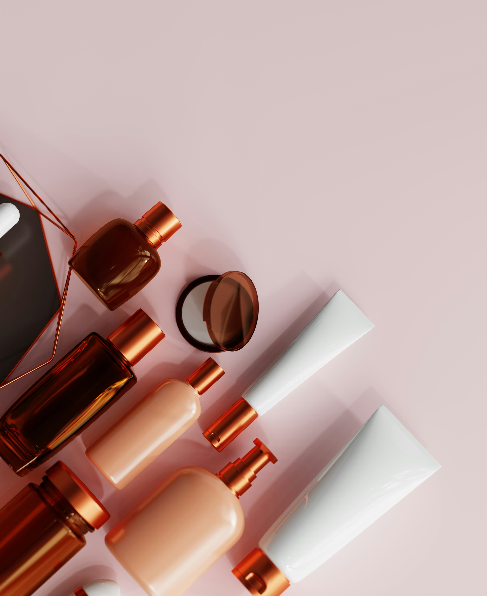

General Questions
Omoggle is a webcam platform that pairs two random strangers and uses AI to score both faces on the PSL Scale (0–10). The higher-scoring face wins and is declared the "Mogger." Both players gain or lose ELO points, which determine their rank on the global leaderboard. Full guide: What is Omoggle?
Basic Omoggle access is free. An optional Omoggle Pro subscription ($10/month) unlocks advanced analytics and priority matching. You can also use the PSL Scanner (solo face analysis) without competing, also free.
No. Omegle was a general random chat service that shut down in 2023. Omoggle is a purpose-built face-rating competition platform. They share a name structure but are completely different products. Full comparison: Omoggle vs Omegle.
Yes. As of May 5th, 2026, Twitch officially updated its Community Guidelines to allow randomized video chat services including Omoggle. Streamers are still responsible for any TOS-violating content that appears from opponents. Full story: Twitch rule change.
Scoring Questions
Omoggle measures six facial metrics: facial symmetry, canthal tilt (eye corner angle), jawline definition, cheekbone prominence, skin clarity, and overall facial harmony. Full breakdown: facial features guide.
Most real faces score between 5.0–7.0. A score of 6.0+ puts you in HTN (High Tier Normie) — the top 10–15%. 7.0+ is Chadlite, which is genuinely rare. No confirmed Chad (8.0+) or Slayer (9.0+) player exists on the leaderboard as of May 2026. See the full PSL scale guide.
Yes, significantly. Natural side lighting from a window at 45 degrees is optimal. Overhead lighting, backlight, and screen glow all negatively affect scoring. Full guide: Omoggle camera setup.
Yes — both through setup optimization (camera angle, lighting, distance) and through actual facial improvement (skincare, gym training, fat loss). Setup changes can raise your score by 0.5–2.0 points immediately. Looksmaxxing produces slower but more permanent improvements. See: how to win Omoggle.
Omoggle's AI is sensitive to camera conditions and can produce inconsistent results from the same person in different setups. The community has also noted that the system can be gamed by props or extreme angles. Results should be treated as entertainment, not scientific measurement. The "glitchy AI" complaints from streamers like xQc often reflect setup issues rather than genuine AI failures.
Looksmaxxing Questions
Looksmaxxing is the practice of systematically improving your physical appearance through lifestyle changes: skincare, gym training, posture correction, hair optimization, and techniques like mewing. Full guide: looksmaxxing 101.
Scientific evidence for mewing in adults is limited. Orthodontic research supports that tongue posture influences jaw development in growing adolescents. In adults with fused skeletal structures, changes are modest at best. Many looksmaxxers report improvement over 1–3 years, though this may also reflect fat loss and improved posture. Honest review: mewing guide.
Skincare: 4–6 weeks for visible improvement. Fat loss / jawline definition: 8–16 weeks for noticeable change. Significant PSL tier improvement: typically 6–12 months of consistent effort. The fastest changes come from skincare and camera setup optimization.
Practice before you compete — our free AI Face Analyzer gives you detailed metric scoring anytime, without needing a live opponent.